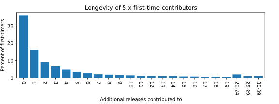

Development statistics for 6.19
As a reminder: LWN subscribers can find much of the information below — and more — at any time in the LWN kernel source database.
The 6.19 development cycle brought in the work from 2,141 developers, which just barely beats the previous record (2,134) set for 6.18; 333 of those developers made their first contribution to the kernel in 6.19, also a relatively high number. The most active developers for 6.19 were:
Most active 6.19 developers
By changesets Kuninori Morimoto 459 3.2% Christian Brauner 271 1.9% Johan Hovold 158 1.1% Ville Syrjälä 153 1.1% Ian Rogers 140 1.0% Russell King 124 0.9% Josh Poimboeuf 101 0.7% Andy Shevchenko 100 0.7% Krzysztof Kozlowski 93 0.6% Jani Nikula 91 0.6% Sean Christopherson 88 0.6% Filipe Manana 87 0.6% Marco Crivellari 87 0.6% Christoph Hellwig 86 0.6% Thomas Zimmermann 85 0.6% Eric Dumazet 85 0.6% Peter Zijlstra 82 0.6% Marc Zyngier 82 0.6% Frank Li 78 0.5% SeongJae Park 78 0.5%
By changed lines Miguel Ojeda 58000 7.8% Cyril Chao 19755 2.6% Christian Brauner 16604 2.2% YiPeng Chai 13293 1.8% Dmitry Baryshkov 12244 1.6% Ian Rogers 10933 1.5% Jason Gunthorpe 10851 1.5% Eric Biggers 9549 1.3% Daniel Scally 9429 1.3% AngeloGioacchino Del Regno 6201 0.8% Josh Poimboeuf 6010 0.8% Ilya Bakoulin 6009 0.8% Rob Herring 5777 0.8% Johannes Berg 5707 0.8% Svyatoslav Ryhel 5610 0.8% Akhil P Oommen 5516 0.7% Mauro Carvalho Chehab 5196 0.7% Neilay Kharwadkar 5162 0.7% Igor Belwon 5155 0.7% Lorenzo Stoakes 4830 0.6%
Kuninori Morimoto, who was first seen during the 2.6.28 development cycle in 2008, was the biggest contributor of changesets by virtue of a major refactoring effort in the sound subsystem. Christian Brauner, the maintainer of the virtual filesystem layer, refactored the handling of credentials, added the listns() system call, and added many self tests, among other contributions. Johan Hovold fixed numerous bugs and did a lot of cleanups in various driver subsystems. Ville Syrjälä worked extensively in the i915 graphics-driver subsystem, and Ian Rogers contributed a long list of improvements to the perf tool.
Looking at lines changed, Miguel Ojeda topped the list with the addition of a modified version of the Rust syn crate. Cyril Chao's first-ever kernel contribution, which put him into second place in the "lines-changed" list, was a driver for MediaTek mt8189 platform devices. YiPeng Chai worked with the amdgpu graphics driver, and Dmitry Baryshkov updated devicetree files for a number of Qualcomm devices.
A full 10% of the patches merged for 6.19 had Tested-by tags, while 56% had Reviewed-by tags; both of those numbers are slightly higher than usual. The top testers and reviews for this release were:
Test and review credits in 6.19
Tested-by Dan Wheeler 89 4.8% Joe Lawrence 63 3.4% Mark Brown 55 3.0% Randy Dunlap 53 2.9% Fuad Tabba 53 2.9% Lad Prabhakar 37 2.0% Shaopeng Tan 35 1.9% James Clark 34 1.8% Carl Worth 34 1.8% Hanjun Guo 33 1.8% Gavin Shan 32 1.7% Zeng Heng 32 1.7% Ryan Walklin 30 1.6% Kai Huang 29 1.6% Fenghua Yu 28 1.5% Yan Zhao 28 1.5%
Reviewed-by Charles Keepax 310 2.8% Dmitry Baryshkov 191 1.7% Geert Uytterhoeven 164 1.5% Frank Li 158 1.4% Krzysztof Kozlowski 156 1.4% David Sterba 144 1.3% Christoph Hellwig 139 1.3% Konrad Dybcio 125 1.1% Simon Horman 125 1.1% Ilpo Järvinen 118 1.1% Jan Kara 118 1.1% Jeff Layton 113 1.0% AngeloGioacchino Del Regno 111 1.0% Jonathan Cameron 109 1.0% Andrew Lunn 109 1.0% Ville Syrjälä 105 1.0%
The list of top reviewers is a bit different than in the past; somehow Charles Keepax managed to review 310 commits — more than four for every day of this 70-day release cycle — mostly within the sound-driver subsystem. The other top reviewers were focused on system-on-chip drivers and devicetree-related changes. The list of top testers is more typical, with Daniel Wheeler on top as usual.
The development of the 6.19 kernel was supported by 227 employers that we know of. The most active employers were:
Most active 6.19 employers
By changesets Intel 1591 11.1% (Unknown) 1410 9.8% 1099 7.7% Red Hat 829 5.8% Renesas Electronics 741 5.2% AMD 612 4.3% (None) 554 3.9% Qualcomm 485 3.4% SUSE 462 3.2% Microsoft 434 3.0% NVIDIA 407 2.8% (Consultant) 392 2.7% Meta 379 2.6% Oracle 371 2.6% NXP Semiconductors 325 2.3% Linaro 319 2.2% Huawei Technologies 260 1.8% IBM 236 1.6% Arm 200 1.4% Bootlin 160 1.1%
By lines changed 101728 13.6% (Unknown) 70125 9.4% Intel 59934 8.0% AMD 45025 6.0% Qualcomm 36322 4.9% NVIDIA 32585 4.4% Red Hat 31429 4.2% Microsoft 30621 4.1% (None) 27285 3.7% MediaTek 23223 3.1% Ideas on Board 14880 2.0% Renesas Electronics 14350 1.9% Meta 14232 1.9% Collabora 14088 1.9% Huawei Technologies 13257 1.8% SUSE 13209 1.8% Oracle 12943 1.7% Arm 12761 1.7% IBM 12230 1.6% Linaro 9015 1.2%
These numbers are reasonably consistent with recent history; hardware vendors are still contributing a large share of the changes. When considering which companies are most influential in kernel development, though, one should also look at the Signed-off-by tags added to patches by maintainers as they apply those patches to their repositories:
Non-author signoffs in 6.19
Individual Jakub Kicinski 991 7.5% Mark Brown 946 7.2% Andrew Morton 584 4.4% Alex Deucher 478 3.6% Greg Kroah-Hartman 406 3.1% Jens Axboe 277 2.1% Hans Verkuil 257 2.0% Bjorn Andersson 245 1.9% Paolo Abeni 218 1.7% Christian Brauner 200 1.5% Namhyung Kim 196 1.5% Shawn Guo 185 1.4% Martin K. Petersen 184 1.4% Peter Zijlstra 184 1.4% David Sterba 179 1.4% Jonathan Cameron 167 1.3% Alexei Starovoitov 141 1.1% Geert Uytterhoeven 129 1.0% Jonathan Corbet 121 0.9% Ilpo Järvinen 121 0.9%
By employer Meta 1544 11.8% 1296 9.9% Intel 1243 9.5% Arm 1171 8.9% AMD 848 6.5% Linaro 786 6.0% Red Hat 647 4.9% Qualcomm 564 4.3% Linux Foundation 441 3.4% Microsoft 432 3.3% SUSE 423 3.2% (Unknown) 409 3.1% NVIDIA 312 2.4% Cisco 257 2.0% Oracle 235 1.8% Huawei Technologies 233 1.8% (None) 209 1.6% LG Electronics 196 1.5% Renesas Electronics 174 1.3% IBM 133 1.0%
The top two companies here are both of the hyperscaler variety, with the top being Meta, which appears rather farther down in the list of changeset contributors. While Meta does contribute a lot of patches — and significant core patches at that — it also employs the maintainers that handle a lot more patches authored by others. Arm, too, shows a bigger influence by this metric.
Developer longevity
For as long as the kernel community has existed, people have worried about its ability to attract new developers. I have often pointed out that each release features the work of roughly 300 first-time developers; the response is often to ask how long those developers stay around. The time has come to try to give at least a partial answer to that question. The plot below was generated by accumulating a list of the 5,424 developers who made their first contribution to one of the 5.x mainline kernels, then looking at how many other releases each contributed to.

What we see is that 1,943 of those first-time contributors — 36% of the total — were never seen again after contributing to one release. Another 883 developers (16%) showed up for one other release, and so on. In the end, 32% of the first-time contributors during this period have been present for at least four kernel releases. At the long tail of the distribution, there are two first-time developers (Andrii Nakryiko and Vladimir Oltean) who have only missed one release and two (Stephan Gerhold and Stefano Garzarella) who have contributed to every release from 5.0 to 6.19.
To provide one other small data point: the first-time contributors being studied here arrived between early 2019 (the 5.0 release) and mid-2022 (5.19). Of those 5,424 developers, 1,067 (just under 20%) of them contributed to at least one of the releases made in 2025. It seems reasonable to consider that group as still being active in the kernel community. Whether these results are good or bad is probably a matter for debate, but it does seem clear that, while a lot of contributors pass through quickly, others are staying around for the long haul.
The kernel community as a whole is also clearly here for the long haul; the
process shows no real signs of slowing down. As of this writing, there are
just short of 11,000 changesets in the linux-next repository; most of those
will move into the mainline in the upcoming merge window. The next kernel,
which will be called 7.0, will continue to demonstrate the community's fast
pace; stay tuned for the details.
| Index entries for this article | |
|---|---|
| Kernel | Releases/6.19 |
Posted Feb 9, 2026 18:52 UTC (Mon)
by jhoblitt (subscriber, #77733)
[Link] (17 responses)
Posted Feb 9, 2026 20:33 UTC (Mon)
by tux3 (subscriber, #101245)
[Link] (3 responses)
Posted Feb 12, 2026 17:42 UTC (Thu)
by jmalcolm (subscriber, #8876)
[Link] (2 responses)
Of course, Rust is not really used in the real kernel just yet as it is all support code and a few drivers. I think your regression could pan out on the driver side.
But we have not yet seen the pace of adoption once we actually get into the core kernel. And, though I look forward to the benefits of Rust, using it in areas that will cause the kernel to stop building on niche architectures is a big deal.
I also love me some LLVM and Clang and pretty much only run architectures that they support. But the ability to compile Rust code in GCC is going to be a gate for adoption of Rust in Linux I would think. Thankfully, gccrs has it as a goal for this year to compile the Linux kernel and LWN has it as one of their 2026 predictions.
https://lwn.net/Articles/1052269/
Rust in the core of Linux in 2027 seems like a real possibility and it will be VERY interesting to see how fast it takes off once it is in there.
After all this arguing, it could be faster than we think.
Posted Feb 13, 2026 14:14 UTC (Fri)
by ojeda (subscriber, #143370)
[Link] (1 responses)
Considering Linux's design, it very much is "real kernel" code, which was one of the main reasons Rust for Linux happened. Not to mention things like Binder, which is as critical as you can get for the systems that use it (functionality-, security- and performance-wise).
I suspect you may be referring to (currently) non-loadable, non-configurable features. The limitation for those, as you say, is the toolchain support, but if the relevant maintainers were to deem maintaining a duplicate implementation worth it, then it could technically be done today.
> Thankfully, gccrs has it as a goal for this year to compile the Linux kernel and LWN has it as one of their 2026 predictions.
There is another way as well, `rustc_codegen_gcc`, which already back in Kangrejos 2022 managed to build the kernel. It is still not production ready, but it does boot a x86_64 kernel with Rust code running on it.
Having said that, even if either GCC Rust or `rustc_codegen_gcc` become ready this year (even for several architectures), we will likely want to wait until the packages are in some distributions and so on.
But, yes, if they at least become ready for a major architecture, which is our hope for this year or the next, then that is a very strong signal, and it could easily mean that more maintainers decide to use Rust for their next feature, or perhaps even to maintain parallel implementations.
Posted Feb 16, 2026 10:17 UTC (Mon)
by taladar (subscriber, #68407)
[Link]
Posted Feb 9, 2026 21:23 UTC (Mon)
by daroc (editor, #160859)
[Link] (12 responses)
The 6.19 release had 19,222,910 non-blank non-comment lines of C, and 89,286 of Rust. That's a ratio of ~215. In 6.18, that was 19,041,645 to 36,077 for a ratio of ~528. So C added ~181,000 lines and Rust added ~53,000 lines.
Most of that would have been the addition of the syn crate, as Jon noted in the article. That crate being vendored in the kernel source code represents the adoption of a big chunk of pre-written code from the Rust ecosystem, and not really normal development activity.
Going back to 6.17, there were 18,951,316 lines of C and 23,163 lines of Rust, for a ratio of ~818. Which was higher than I was expecting, actually. Now you've got me curious about the historical trend as well. I'm going to see about writing up a script to scrape some numbers into a spreadsheet ...
(Also: Rust is the 7th most popular language in the kernel right now, after C, header files, assembly, JSON, reStructuredText, YAML, shell, and plain text. It edged ahead of Python, make, SVGs, and Perl in this last release!)
Posted Feb 9, 2026 22:24 UTC (Mon)
by jhoblitt (subscriber, #77733)
[Link] (4 responses)
Posted Feb 9, 2026 22:45 UTC (Mon)
by koverstreet (subscriber, #4296)
[Link] (3 responses)
Posted Feb 10, 2026 19:23 UTC (Tue)
by NYKevin (subscriber, #129325)
[Link] (2 responses)
Posted Feb 11, 2026 7:23 UTC (Wed)
by taladar (subscriber, #68407)
[Link] (1 responses)
I suspect having a culture of using derive macros for many common tasks also helps keep the line count low in Rust.
Posted Feb 11, 2026 15:31 UTC (Wed)
by mathstuf (subscriber, #69389)
[Link]
Posted Feb 9, 2026 23:41 UTC (Mon)
by ojeda (subscriber, #143370)
[Link] (1 responses)
https://lpc.events/event/19/contributions/2068/attachment...
Nothing fancy, but one summary is that the Rust code more than quadrupled in a year (and that is without counting vendored code).
Posted Feb 10, 2026 0:07 UTC (Tue)
by jhoblitt (subscriber, #77733)
[Link]
Posted Feb 10, 2026 13:01 UTC (Tue)
by daroc (editor, #160859)
[Link] (4 responses)
Posted Feb 10, 2026 19:27 UTC (Tue)
by jhoblitt (subscriber, #77733)
[Link] (1 responses)
Is the key listing every type of code detected or every type of code supported? If the former... is there really Clojure in tree???
Posted Feb 10, 2026 20:24 UTC (Tue)
by daroc (editor, #160859)
[Link]
Posted Feb 10, 2026 22:27 UTC (Tue)
by Klaasjan (subscriber, #4951)
[Link] (1 responses)
Posted Feb 10, 2026 22:31 UTC (Tue)
by Klaasjan (subscriber, #4951)
[Link]
Posted Feb 10, 2026 3:52 UTC (Tue)
by vasi (subscriber, #83946)
[Link] (1 responses)
Posted Feb 10, 2026 6:29 UTC (Tue)
by hrw (subscriber, #44826)
[Link]
So, check your inbox and spam.
Lines by C vs Rust
I checked the last few tags with Tokei:
Lines by C vs Rust
Version Rust Rust% C GNU ASM Total
6.16 26999 0.08% 35518738 373967 35919704
6.17 32699 0.09% 35682999 373801 36089499
6.18 49466 0.14% 35825868 374814 36250148
6.19 108478 0.30% 36134877 376296 36619651
Naturally whenever you have four numbers, this calls for an exponential regression.
We can confidently extrapolate that by v7.5 we will already see 5% of the kernel written in Rust.
7.10 will finally be majority Rust, while the decisive 7.11 merge window will remove the remaining ~15M lines of C all at once to reach a perfect 113% of Rust code in the kernel.
Lines by C vs Rust
Lines by C vs Rust
Lines by C vs Rust
Lines by C vs Rust
Lines by C vs Rust
Lines by C vs Rust
Lines by C vs Rust
Lines by C vs Rust
Lines by C vs Rust
Lines by C vs Rust
Lines by C vs Rust
So I wrote a script to crunch the numbers, and put together a set of graphs showing
the change in lines of code by language over time. The charts are not as clean as the Rust-only visualizations that Miguel linked, but they show every language that cloc knows how to detect.
Lines by C vs Rust
Lines by C vs Rust
Lines by C vs Rust
Lines by C vs Rust
Lines by C vs Rust
My second kernel patch was in here!
My second kernel patch was in here!